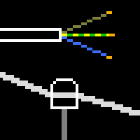
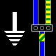

Welcome to the Electrical Items Collection! This online collection is dedicated to documenting items used in electrical installations from all around the world, their function and the way they work. This includes, but isn't limited to: power meters, breakers, fuses, sockets, plugs and extension cords.
Aside from showcasing various kinds of items, there are also pages used to explain the theory behind electrical installations, as well as ones to summarise the main features of installations from a few geographical areas.
Types of fuses and breakers formerly used in Italy over the years
Meters used for measuring electrical energy and fuses to protect the incoming supply


Electrical wiring - from the transformer to the home
Transformers, Earthing systems, Radial/ring circuits, Wall boxes
Transformers, Earthing systems, Radial/ring circuits, Wall boxes
External resources:
- The excellent Museum of Plugs and Sockets
- Museum of Old Electrical Items (for UK electrical items)
- Electrical wiring - Wikipedia
- Additional resources
- Initial release